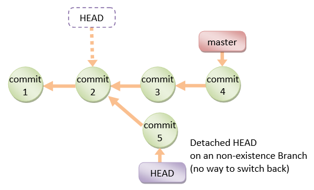
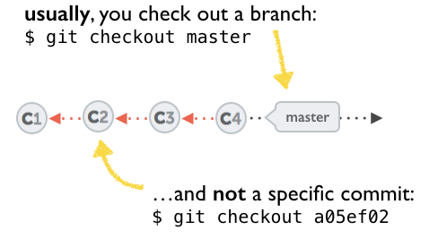
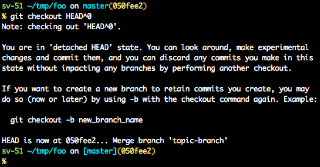
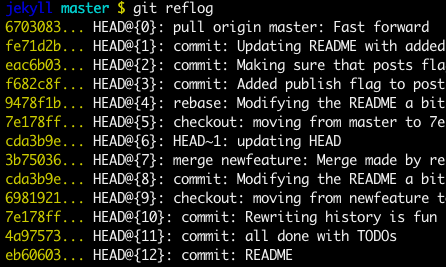
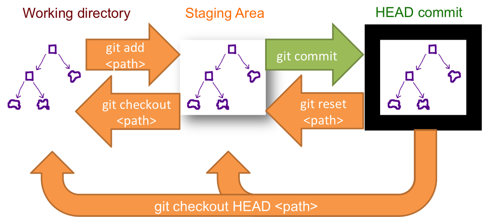

How can I recover a lost commit in Git?
First, got "your branch is ahead of origin/master by 3 commits" then my app has reverted to an earlier time with earlier changes.
How can I get what I spent the last 11 hours doing back?
Answer
git reflog is your friend. Find the commit that you want to be on in that
list and you can reset to it (for example:git reset --hard e870e41).
(If you didn't commit your changes... you might be in trouble - commit early, and commit often!)
Suggest
Before answering, let's add some background, explaining what this HEAD is.
First of all what is HEAD?
HEAD is simply a reference to the current commit (latest) on the current
branch.
There can only be a single HEAD at any given time (excluding git
worktree).
The content of HEAD is stored inside .git/HEAD and it contains the 40
bytes SHA-1 of the current commit.
detached HEAD
If you are not on the latest commit - meaning that HEAD is pointing to a
prior commit in history it's called detached HEAD.

On the command line, it will look like this - SHA-1 instead of the branch name
since the HEAD is not pointing to the tip of the current branch:


A few options on how to recover from a detached HEAD:
git checkout
git checkout <commit_id> git checkout -b <new branch> <commit_id> git checkout HEAD~X // x is the number of commits t go back
This will checkout new branch pointing to the desired commit.
This command will checkout to a given commit.
At this point, you can create a branch and start to work from this point on.
# Checkout a given commit. # Doing so will result in a `detached HEAD` which mean that the `HEAD` # is not pointing to the latest so you will need to checkout branch # in order to be able to update the code. git checkout <commit-id> # Create a new branch forked to the given commit git checkout -b <branch name>
git reflog
You can always use the reflog as well.git reflog will display any change which updated the HEAD and checking
out the desired reflog entry will set the HEAD back to this commit.
Every time the HEAD is modified there will be a new entry in thereflog
git reflog
git checkout HEAD@{...}
This will get you back to your desired commit

git reset --hard<commit_id>
"Move" your HEAD back to the desired commit.
# This will destroy any local modifications. # Don't do it if you have uncommitted work you want to keep. git reset --hard 0d1d7fc32 # Alternatively, if there's work to keep: git stash git reset --hard 0d1d7fc32 git stash pop # This saves the modifications, then reapplies that patch after resetting. # You could get merge conflicts if you've modified things which were # changed since the commit you reset to.
- Note: (Since Git 2.7) you can also use the
git rebase --no-autostashas well.
git revert<sha-1>
"Undo" the given commit or commit range.
The reset command will "undo" any changes made in the given commit.
A new commit with the undo patch will be committed while the original commit
will remain in the history as well.
# Add a new commit with the undo of the original one. # The <sha-1> can be any commit(s) or commit range git revert <sha-1>
This schema illustrates which command does what.
As you can see there, reset && checkout modify the HEAD.
